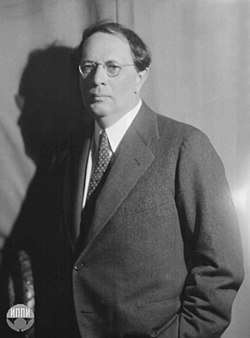

Aleksey Nicolaievich Tolstoy sinh ngày 10-1-1883 tại thành phố Nikolaievsk, tỉnh Samara miền hạ lưu sông Volga, trong một gia đình quý tộc nhỏ có truyền thống văn học. Năm 1901, ông lên Petersburg theo học trường kỹ thuật, năm 1907 xuất bản tập thơ đầu tiên, nhưng ít lâu sau chuyển sang viết văn xuôi. Năm 1914-1916, ông làm phóng viên chiến tranh. Từ 1918 ông sống lưu vong ở Pháp. Năm 1923 ông trở về nước Nga, tình nguyện đứng vào hàng ngũ những trí thức tham gia công cuộc xây dựng chủ nghĩa xã hội. Ông mất ngày 23-2-1945 tại nhà an dưỡng Barkhivinsky, ngoại ô Moskva, thọ 63 tuổi.

Chú thích: Piotr (tiếng Nga) là tên gọi vua Pie (tiếng Pháp). Trong khi gõ truyện nầy, chúng tôi cố gắng sửa đúng địa danh theo tiếng Nga. Tuy nhiên, bìa sách, chúng tôi không thay đổi.
Các đơn vị đo lường cổ của Nga:
1 versok (вершок) bằng 4,445cm
1 arsin bằng 0,71 mét
1 xagien (сажень) bằng 2,134m
1 versta (dặm Nga) (верста), bằng 1,06 km
1 dexiatin (mẫu Nga) = bằng 1,0925 hecta
1 kruk bằng bốn héc ta.
1 pud bằng 16,38 kg.
1 phun-tơ Nga ( фунт) bằng 0,409kg = 1/40 pud
1 phun-tơ Anh bằng 453,6 gam
1 zolonich (золотник) bằng 4,26 gram)
1 mera bằng khoảng 26,24 lít. (ND)
1 ao-xơ (унция) bằng 29,86 gam
1 thùng (бочка) thùng tono, thùng phuy, thùng tròn; bằng 491,96 lít
1 xô (ведро) bằng 12,3 lít